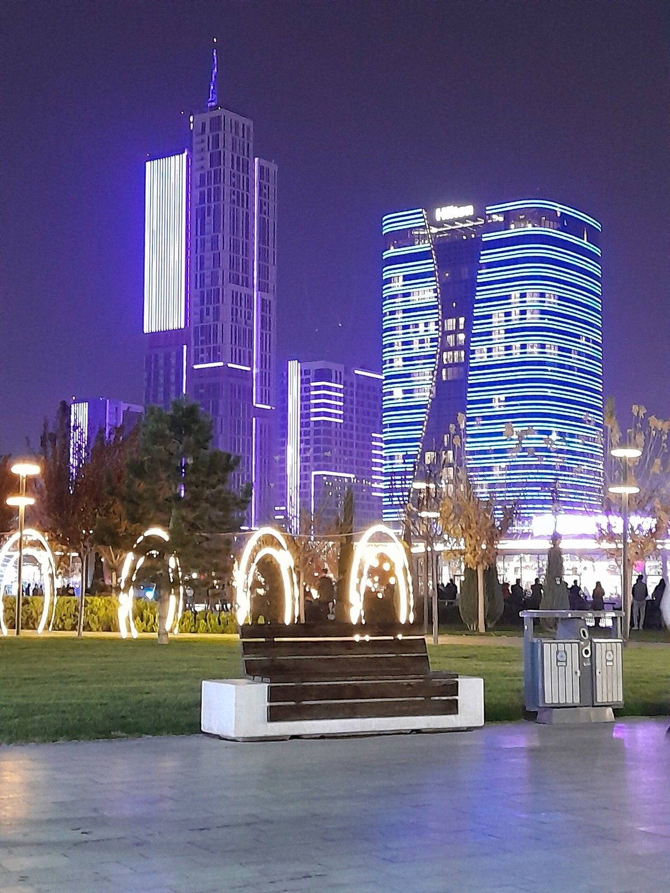
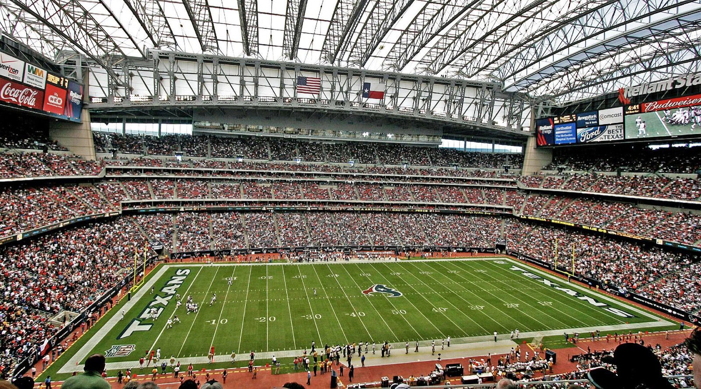
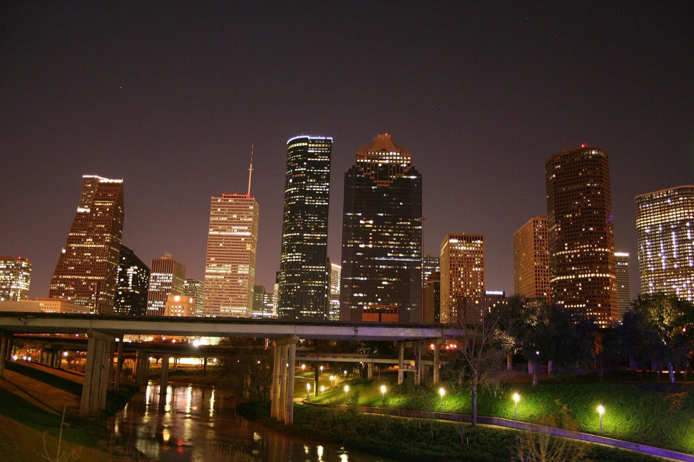

Hi Laylah. Houston is waiting.
Years ago, a quiet girl rode her scooter into a park hoping someone her age would say hi. Mel did. From that hello to May 30, when you stood next to her as her best woman, that is the arc. Day 1, literally.
Gordon and I were lucky to share the room with you this weekend. Now, on to the next chapter you have circled. This page is yours. Built just for you. One of the matches the whole continent should be watching, and you have the ticket.
Why this one matters
Two storylines are going to be in the air the second the whistle blows.
- Uzbekistan's first World Cup, ever. Not the kind of first that comes around again. Every fan in white and blue in your section has waited their whole lives for this kickoff. You are inside a once-only moment for a country.
- Ronaldo is in the squad. It's official. Portugal named him on May 19: his record sixth World Cup, as captain, at 41. Only he and Messi have ever reached six. If he steps on that pitch, you watched one of the two greatest careers in the sport's history, live, in its final chapter. That sentence is worth a lot more in ten years than it sounds today.
- Houston is a hub of both diasporas. The Portuguese community in Texas runs deep. Uzbek expat networks across the South will travel in. The away end is going to feel like a wedding too, just bigger.
Facts you can deploy
You've already been testing these on people (the Uzbekistan one landed, I heard). Here's a refill. Each of these is verified and tends to stop a dinner table.
- Uzbekistan has never been to a World Cup before this one. They qualified June 5, 2025 with a 0-0 draw against the UAE, the first Central Asian nation ever to make it. You already know this one. It's still your opener.
- Uzbekistan is one of only two doubly landlocked countries on Earth. Every country it borders is also landlocked. The only other one is Liechtenstein. (And no, it's not in the Middle East. It's Central Asia, north of Afghanistan. Capital: Tashkent.)
- Only two humans have ever played in six World Cups, and both are doing it this month. Ronaldo and Messi. Ronaldo's sixth actually starts at YOUR stadium, NRG, against Congo DR on June 17, six days before your match. You're seeing the encore in person.
- Your stadium is the only air-conditioned one you could ask for. NRG's 12,000-ton cooling system holds the inside around 72°F while Houston cooks outside. The players will feel it too. Fresh legs late in the match.
- This match is one of 104. The 2026 World Cup is the biggest ever: 48 teams, 3 countries, 16 host cities. And you're at one of the games where a nation's entire football history starts.

Your Group K, briefly
The four nations battling for the top two spots out of the group:
Group K is a real one. Portugal is the favorite. Colombia is the wildcard with real shooting power. Congo DR are back at a World Cup after fifty plus years and they will not be rolled over. And Uzbekistan, your other team for the day, get to write their first paragraph in the history books from your section.
The form guide, two weeks out
Checked against the wire on June 10. Three things shape your match:
- Portugal beat Chile 2-1 in their June 6 send-off friendly. One scare: Rafael Leão was sent off for violent conduct in that match. Good news since: suspensions from friendlies don't carry into the World Cup, so Leão is eligible for your match.
- Uzbekistan lost both warm-ups, 0-2 to Canada and 1-2 to the Netherlands, playing a compact 5-4-1. Translation for your seat: expect Uzbekistan to defend deep with everyone behind the ball, and Portugal to camp in their half. Set pieces and patience decide games like that.
- Portugal arrive as reigning Nations League champions, ranked #5 in the world, under coach Roberto Martínez. The gap on paper is enormous. That is exactly the kind of match where a debutant nation's one big moment echoes forever.
Houston, the city
NRG Stadium is the host venue, and here is your best flex of the week: of all 16 World Cup stadiums, NRG is one of only three with full air conditioning (Houston, Dallas, and Atlanta; everyone else sweats). Retractable roof, a 12,000-ton cooling system, interior held around 72°F. You drew one of the comfortable tickets in the entire tournament. A bonus detail worth knowing. Portugal also plays Congo DR at NRG on June 17, six days before your match. The Portuguese travelling support will already know NRG by the time you walk in. The away end on the 23rd will feel rehearsed.

If you want the free, no-ticket version of the tournament while you're in town, the official FIFA Fan Festival sits in EaDo (East Downtown), four blocks of screens and food running nearly every day of the tournament. Good landing spot the night you arrive.
The match-day vibe in Houston will spill across downtown, Midtown, and the Montrose stretch. You will not need to plan every meal and bar in advance. Houston rewards wandering. Tell me what you like, and I will build you a short list, not a long one.
Where Portugal lands in Houston
Houston has a Portuguese diaspora that runs deeper than most people realize. A short list of places where the away end will pre-game and post-game.
- OPORTO Fooding House & Wine · Midtown. Portuguese-inspired food and wine bar. The closest Houston gets to a Lisbon back-room. A natural pre-match spot.
- Hugo's · Montrose. Chef Hugo Ortega's celebrated regional Mexican kitchen. Not Portuguese, just one of the best sit-down tables in the city for the night before.
- Common Bond Bistro · Montrose. European-style pastries that will remind Portuguese visitors of a pastelaria. Coffee and custard tart in the morning before the match.
- The Phoenix on Westheimer · Montrose. A soccer-fan refuge since long before this match was on the calendar. (Its planned move to Richmond Ave won't be done until after the tournament, so Westheimer is the address that counts in June.)
- Pitch 25 Beer Park. An indoor soccer pitch inside a bar with around 100 beers on tap. The dedicated soccer-fan venue in the city.
Want a tighter shortlist for your specific tastes? Use the Ask Darby box at the bottom and I will tune one for you.
Getting to NRG
The match kicks off at 12:00 PM CT. Gates are expected to open around 9:00 AM (FIFA has been opening stadiums up to three hours before kickoff). Plan to be inside by 11:00 AM so you have time to clear security, find your seat, and feel the atmosphere settle.
By METRORail (the simplest option)
The Red Line runs directly to NRG Park station, about 21 minutes from Downtown. Trains every 6 minutes during peak. Fare is $1.25 one way. From a Downtown or Midtown hotel this is the move.
By rideshare
Uber, Lyft, and Waymo all run to NRG. Waymo expanded its Houston service area to NRG Stadium specifically for the World Cup. Surge pricing on match days is real. If you ride, plan to be dropped off no later than 10:30 AM.
By car
On-site parking lots open early and fill fast. Pricing climbs sharply on match days. Off-site lots in the Texas Medical Center area are cheaper and walkable. If you drive, reserve a spot in advance.
Bag policy (read this twice)
NRG enforces the FIFA clear bag policy. You can bring one clear plastic bag, no larger than 12 by 6 by 12 inches (a standard one-gallon freezer bag works), plus one small clutch no larger than 4.5 by 6.5 inches.
What is not allowed: backpacks, purses, fanny packs, camera bags, anything opaque. There is no bag storage at any World Cup 2026 venue. If you arrive with a prohibited bag, you will need to return to your vehicle or hotel. Plan ahead. Leave anything you do not need at the hotel. One mercy: sealed water bottles of 20 oz or less are allowed in, and empties can be refilled inside.
Weather
Houston in late June runs near 90°F with humidity that makes it feel well past that, and June 21 to 30 is statistically the city's steamiest stretch. Inside, NRG is air conditioned to about 72°F, one of only three World Cup venues that can say that. The walk from the rail station or the rideshare drop-off is where the heat lives. Sunscreen, water, light layers. Hydrate on the way in.
Soccer basics, just for you
No textbook. Eight things that will make the match feel readable from your seat. Read these on the flight to Houston, or in the cab to NRG.
- 90 minutes plus stoppage time, no clock pause. Two halves of 45. The clock keeps running for fouls, throw-ins, injuries. At the end of each half the referee adds a few minutes of "stoppage time" for everything that paused play. The final whistle comes when the ref decides, not when the scoreboard hits zero.
- Positions are loose, watch where the ball is. Goalkeeper, defenders, midfielders, forwards. Don't get tangled in formations (4-3-3 and so on, you will see them on graphics, they are guides). The game is fluid. Watch the player closest to the ball and the ones running into space.
- Both teams want the ball at all times. There is no offense and defense like American football. The team without the ball is trying to win it back. The team with it is trying to score. Everyone is doing both, all match.
- Set pieces are scripted dramas. Corner kicks, free kicks, penalties. These are the moments teams have rehearsed plays for. A lot of World Cup goals come from set pieces. When you see one being set up, lean forward.
- Yellow card is a warning. Red card sends a player off. Two yellows in one game equals one red. A red means the team plays the rest of the match down a player, ten against eleven. The shape of the whole game changes. Watch the body language after a red.
- Goals are rare, so each one matters more. 1-0 and 2-1 are common World Cup scores. A 5-0 happens, but it is the exception. Every goal moves the tournament. Don't expect basketball pace, expect chess that occasionally explodes.
- The crowd is the second commentator. A gasp means something almost happened. A roar means something just did. A long quiet means somebody is hurt or VAR (video review) is checking a call. Listen to the room, you will feel the game.
- For your match, three things to watch for specifically:
- Cristiano Ronaldo, if he plays. He is 41 years old. He moves slowly now, on purpose. Watch what he does without the ball. Finding the right pocket of space is what made him one of the greatest of all time. If he scores, you watched history land in front of you.
- Uzbekistan's goalkeeper. Playing in a World Cup for the first time, in front of his country, in a country that has never been here before. That is a face to find before kickoff and watch all match.
- The away end. Houston has both a Portuguese community and an Uzbek community. Both will be loud. When Uzbekistan touches the ball, listen for the white and blue corner. When Portugal does, red and green. You are inside both diasporas at once.
That is enough to be readable on the day. Anything else you want to learn before then, ask below.
Players to find before kickoff
Faces are easier to track than formations. Half a dozen names from each side, briefly. Pick one or two at warm-up and follow them through the match.
Portugal · Selecção das Quinas
- Cristiano Ronaldo · Captain · Forward · Al Nassr. His record sixth World Cup, named to the squad May 19. He is 41, moves slowly on purpose, and is at his most dangerous in the box. If he plays, watch what he does without the ball.
- Bernardo Silva · Midfielder · Manchester City. The quiet genius. Reads the field two passes ahead. If Portugal is settling into rhythm, Bernardo is the reason.
- Bruno Fernandes · Midfielder · Manchester United. The set-piece taker and the long-range shooter. Vocal on the pitch. Watch him conduct.
- Vitinha · Midfielder · PSG. Won the Champions League with PSG in 2025. The engine room behind Portugal's possession.
- Rúben Dias · Defender · Manchester City. Portugal's anchor in the back. Aerial. Talks to his back four all match.
- Diogo Costa · Goalkeeper · FC Porto. First-choice keeper. Watch how he distributes from goal kicks. Portugal's build-up starts here.
- Rafael Leão · Forward · AC Milan. The pace. If Portugal is breaking on the counter, Leão is the runner. (He saw red in the June 6 friendly, but friendly suspensions don't carry into the World Cup. He's available.)
- Roberto Martínez · Coach. The Spaniard who delivered Portugal's 2025 Nations League title. Watch the touchline when Portugal can't break the low block down.
Uzbekistan · Oq Bo'rilar (White Wolves)
- Eldor Shomurodov · Captain · Forward · Istanbul Başakşehir. The face of Uzbekistan's first ever World Cup. Their all-time leading scorer with 44 goals. He is the player his country is watching.
- Abdukodir Khusanov · Defender · Manchester City. The first Uzbek ever to play in the Premier League, and the man whose job is keeping Ronaldo quiet. If Uzbekistan survives the first half, he is the reason.
- Abbosbek Fayzullaev · Midfielder. The young creator. When Uzbekistan finally breaks out of their own half, the ball goes through him.
- The starting goalkeeper. Whoever starts is making their World Cup debut in front of their country. Find the face during warm-up.
- Coach Fabio Cannavaro. Yes, that Cannavaro. World Cup winner with Italy in 2006 (he was Captain). Now coaching Uzbekistan in their first ever World Cup. The Italian fingerprints on their tactics will be the story to watch.
Your week, day by day
A loose frame, adjust to your actual travel. The point is to land in Houston rested and to leave with the match still in your bones.
Sunday June 21 · Vancouver
Pack the clear plastic bag (or buy one in Houston). Confirm your rideshare app is logged in. Print the ticket and have it in your phone wallet. Light day. Hydrate.
Monday June 22 · Travel
Fly to Houston. Both IAH (Bush Intercontinental) and HOU (Hobby) work; IAH is bigger and tends to have more Vancouver routing. Check in to your hotel. Decide tonight whether you want a calm dinner or to find the Portuguese pre-match crowd at OPORTO or Hugo's.
Tuesday June 23 · Match day
Tap each step as you live it. The page remembers.
- 8:30 AM. Coffee and a pastry at Common Bond or anywhere in Montrose. Light breakfast.
- 9:30 AM. Head toward NRG. METRORail Red Line if your hotel is Downtown or Midtown. Otherwise rideshare or pre-arranged.
- By 10:30 AM. At the stadium. Gates should already be open (FIFA opens up to three hours early). Clear security with your clear plastic bag and small clutch. Pace yourself, do not rush.
- 10:30 to 11:30 AM. Find your seat. Watch warm-ups. Locate the Portuguese away end, locate the Uzbek section. Listen to both crowds.
- 11:45 AM. Lineups announced. National anthems.
- 12:00 PM CT. Kickoff.
- ~1:50 PM. Final whistle.
- Afternoon. Stick around NRG for the wind-down or head back to Montrose. The diaspora bars will be loud either way.
Wednesday June 24 · Your extra night
You asked about extending, so this day got its own plan. The short version from our text thread: spend the bonus night downtown, not by NRG. The stadium district goes quiet the day after a match, but the FIFA Fan Festival in EaDo runs on every match day of the tournament. Free entry, giant screens, food, live music, and whatever matches are on that day playing on the big boards.

- Marriott Marquis, Downtown. The new top pick, because you said pool and this is THE pool: a rooftop lazy river shaped like Texas. You float in the state you conquered. $250 to $500 USD.
- Hotel ZaZa, Museum District. The stylish play. Design hotel with a real pool scene, between downtown and NRG, next to Hermann Park and the museums. About $250 to $350 USD.
- C. Baldwin, Downtown. Honesty corner: I recommended this one by text for its rooftop pool, and on a deeper check it does not have a pool. Still a lovely Theater District hotel ($200 to $260 USD), but if the pool matters, the two above are your picks.
Tell me which way you're leaning and I'll check live rates and availability for your exact night.
Thursday June 25 · Fly home
Home to Vancouver with the match still in your bones. If you're still curious where Group K goes next: Portugal meets Colombia in Miami on June 27 while Congo DR and Uzbekistan close out in Atlanta the same day.
If you want this tightened around your real flights and hotel, send me the details in the Ask Darby box below and I will rebuild it with your actual day.
Soccer 101, the things to look for
No quiz. Just a few digestible things that turn watching from confusing into thrilling. Read once before kickoff and you will feel like soccer has been your sport for years.
The shape of the game
- 90 minutes, two halves of 45, plus a few minutes of "stoppage time" the ref adds at the end of each half. The clock never stops once play starts.
- 11 vs 11, including a goalkeeper. The other ten are split into defenders, midfielders, and forwards. The split is called the "formation."
- Subs are limited (five per team across three windows). Once a player is out, they don't come back. So late-game energy is real.
Vocabulary you will hear
- Pitch is the field.
- The box is the large rectangle in front of each goal. A foul on an attacker inside the box gives that team a penalty kick. Huge moment.
- Touchline is the long sideline. Goal line is the short one under each goal.
- Stoppage time is the bonus minutes added at the end of each half.
What to look for moment to moment
- A great touch. When a player receives a pass and keeps the ball glued close in one motion. The crowd reacts even though nothing was scored.
- A switch of play. A long pass from one side of the pitch to the other. Forces the defense to scramble. Often opens up a chance.
- The press. When a team chases the ball as a unit, trying to win it back high up the field. Looks like organized panic. It is actually one of the most coordinated things on a pitch. (You know this one from our texts. It's lesson one for a reason.)
- A defender's first touch. Watch a defender the moment a pass travels toward them. The best ones look up BEFORE the ball arrives. They've already mapped the whole field by the time they touch it. Quiet, beautiful skill that nobody talks about.
- A long ball over the top. A chip behind the defense for a forward to run onto. When it works, a goal-scoring chance in two seconds.
- A clean tackle. A defender winning the ball back without fouling. Old-school crowds cheer these like goals.
The rule everyone asks about: offside
Simple version. At the exact moment your teammate passes the ball, you have to be either level with, or behind, the second-to-last defender (which is usually the last outfield defender, since the goalkeeper is the very last). If you are past that line when the pass starts, the play is whistled off.
Why it exists: without it, forwards would just camp next to the goalkeeper waiting for long passes, and the game would turn into catch.
Why goals are precious
Most matches end 0-0, 1-0, 1-1, or 2-1. Every single goal flips the energy of the game. That is why grown adults cry. For your match, expect Portugal to push for goals and Uzbekistan to defend with everyone behind the ball. Any Uzbek goal will detonate that side of the stadium, because of what it would mean for their first World Cup ever.
The stakes of Group K
Top 2 finishers from each group, plus the best third-place finishers, advance to the knockout round. So this is do-or-die territory for Uzbekistan. Portugal will most likely win, but the question is how it plays out, and whether Uzbekistan can take a moment that travels home with them forever.
Players to track
- Cristiano Ronaldo (Portugal, #7). the headline. Watch him on free kicks, and watch him drift into the box for crosses. Possibly his last World Cup.
- Bernardo Silva (Portugal, midfield). the ball seems magnetized to his foot. Smaller, quieter, always involved. The connoisseur's favorite.
- Eldor Shomurodov (Uzbekistan, striker and captain). the best-known Uzbek player and their all-time top scorer. The one most likely to score the historic first.
Things to feel for, not just see
- The hum of the crowd before kickoff.
- The first time the away end starts singing in unison.
- The hush before a free kick from a dangerous spot.
- The one-second pause before the stadium realizes a goal is in.
- The shape shift if a team scores: do they push for more, or sit back?
The Day-1 angle
Soccer is best watched with someone you trust to whisper observations to in real time. Mel did exactly that for you in a park decades ago. Said hi. Changed the chemistry of the moment. The match in Houston is just another version of that. Be there together, notice what feels right, ask each other what is actually happening. The game makes more sense when you talk through it.
Ask anything. I will get an answer.
Type your question below. Tap send. Your phone opens a message to Gordon. He routes it to me, and we get back to you fast. Tickets, hotels, food, the away-end vibe, what to wear, where to drink with your section, how to find a Portuguese bakery before kickoff. Anything.